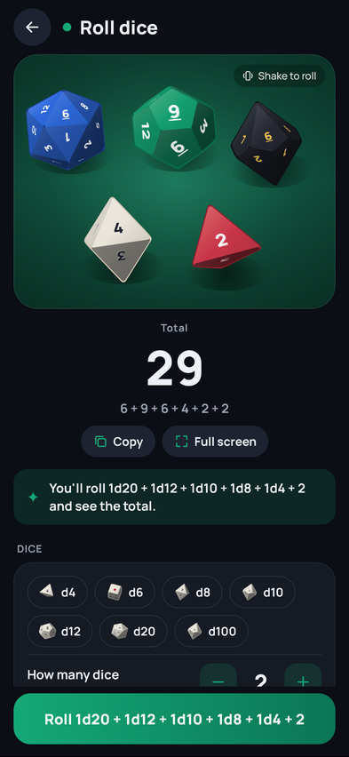
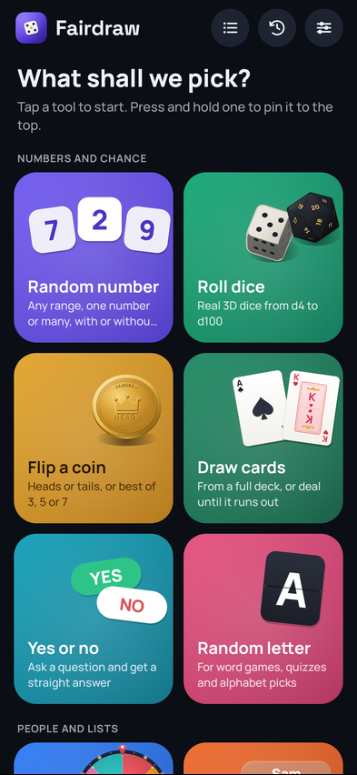
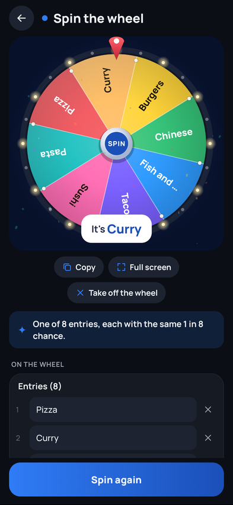
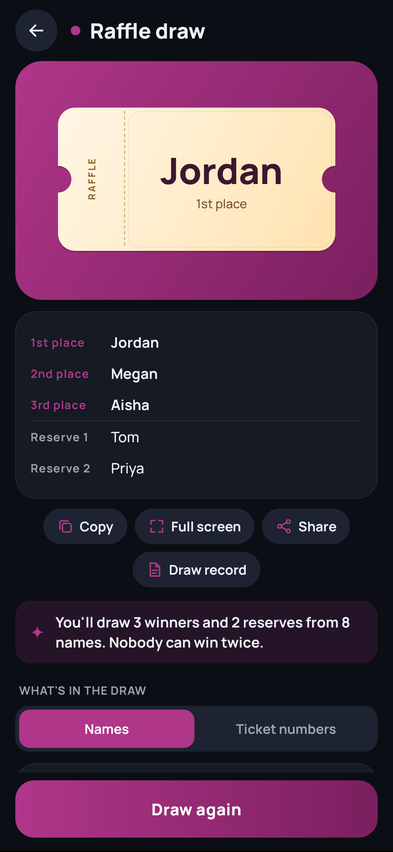
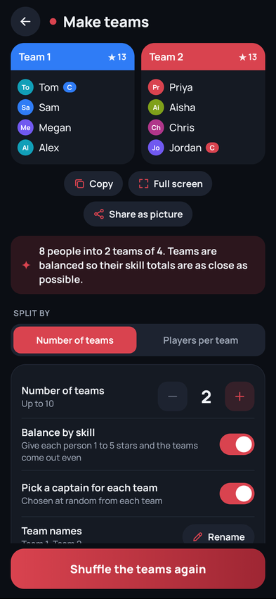
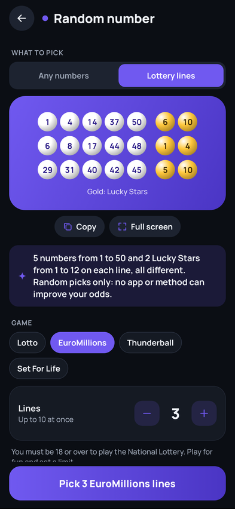
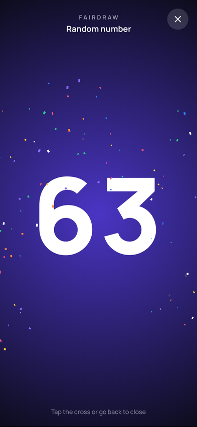
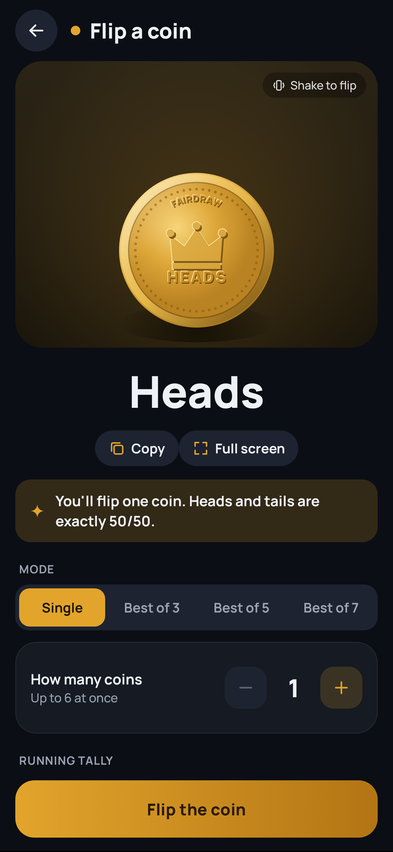
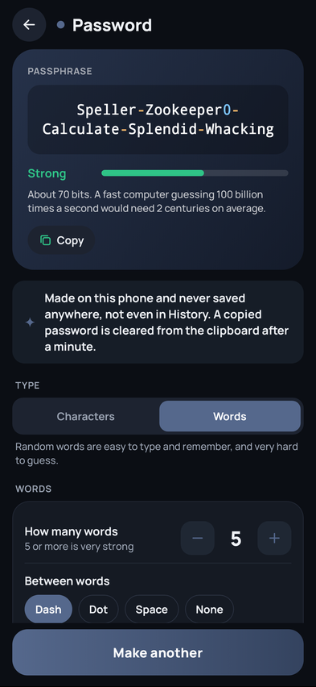

Fair picks, every time.
Fairdraw picks numbers, rolls dice, spins a wheel, makes teams and draws raffles. Every result comes from your phone's cryptographic random generator, so every outcome is exactly as likely as the next.
Thirteen tools in one app, with real 3D dice, a full-screen mode for showing a room and a draw record you can print. It is free, with no adverts, and it cannot go online.
Download for AndroidHow to install
- Version 1.0.1
- Android 8 or later
- 1.8 MB
Free, with nothing to unlock. No adverts, no account, no tracking. Read the release notes.
Chrome may say the file might be harmful. It shows this for app files that do not come from Google Play. Choose Download anyway.

- No subscriptionEvery feature is in the free app.
- No advertsNone in the app and none on this site.
- No internetThe app has no permission to go online.
- Truly fairPicks come from a cryptographic generator.
A look inside
These are the real screens, drawn from the app's own code. Swipe or scroll sideways to see them all.








How it works
A random picker is only useful if everyone trusts it. Fairdraw tells you what will happen before it happens, and picks the result fairly before any animation starts.
Pick a tool
Numbers, dice, a coin, cards, the wheel, names, teams, a raffle, whose turn, shuffle or a password.
Read what you'll get
Every tool shows a plain sentence, such as "You'll get 3 different numbers from 1 to 59", that changes as you change the settings.
Tap, and it's fair
The result is drawn from the phone's cryptographic generator, then shown with a roll, a spin or a flip. Show it full screen or keep a draw record.
Everything is in, and all of it is free
Nothing below is held back for a paid tier, because there is no paid tier.
Numbers and chance
- Random numbers
- Any range up to a trillion, one number or 500, with or without repeats, sorted if you like. Leave numbers out, or run it like a raffle so drawn numbers stay out.
- Lottery lines
- Lines for Lotto, EuroMillions, Thunderball and Set For Life, with the bonus balls in gold. Random only: nothing can change the odds.
- Real 3D dice
- d4, d6, d8, d10, d12, d20 and percentile dice that tumble and land, in five colours. Type 2d6+3 and see the total and the breakdown.
- Coins, cards, yes or no, letters
- A 3D coin with best of 3, 5 or 7, a full deck with jokers if you want them, a yes or no orb, and a railway-board letter picker.
People and lists
- Spin the wheel
- Your own entries on a wheel you can flick. Take winners off, give some entries a bigger slice, and pick from four styles.
- Pick a name, raffles and turns
- Pick one name or several, draw a raffle with winners and reserves or by ticket number, and run a fair rota so everyone gets a turn.
- Make teams
- Fair or skill-balanced teams, captains, your own team names, and rules to keep two people together or apart. Share them as a picture.
- A Lists library
- Save a list once, then load it into the wheel, names, teams, raffle, rota or shuffle. Paste a whole list at once.
Show it and prove it
- Full screen
- A drum roll, then the result as big as it will go, with confetti. The screen stays on, for briefings, parties and classrooms.
- A draw record
- A one-page PDF of any result: when, what it was drawn from, the result, how it was picked and a reference code, with lines to sign.
- History
- Every result on this phone, grouped by day, with search, stars and export to a spreadsheet file. Switch it off if you prefer.
Handy
- Passwords
- Strong passwords or easy-to-type passphrases, with a plain-English strength meter. Never saved, and wiped from the clipboard after a minute.
- Widget and tile
- Flip a coin, roll a die or pick 1 to 100 from your home screen or the quick-settings shade.
- Sound and feel
- Dice clatter, wheel clicks and a coin ring made by the app itself, with gentle vibration. Three sound styles, all optional.
- Looks
- Light, dark and pure black themes, five accent colours, and a reduced-motion setting.
Privacy
- No internet at all
- Fairdraw has no permission to go online, so it cannot send anything anywhere.
- No account
- Nothing to sign up for. Your lists and history stay on your phone.
- A backup you hold
- One file with everything in it, saved and restored by you.
Your picks stay yours
No internet at all
Fairdraw has no permission to go online. It cannot send your lists or results anywhere.
Nothing to sign up for
No account, no adverts and no tracking, in the app or on this site.
You hold the files
A draw record, a teams picture, a history export or a backup goes only where you send or save it.
Installing and updating
Fairdraw is not on Google Play, so your phone asks a couple of extra questions the first time.
Download the app file
Tap Download on your phone. The file is called Fairdraw.apk and is about 1.8 MB. If Chrome says the file might be harmful, choose Download anyway.
Allow the install
Open the file. The first time, Android asks you to allow installs from your browser. Allow it, go back, and tap Install.
Open Fairdraw
There is nothing to set up. Tap a tool and go.
To update, download the newest version and install it over the old one. Your lists, history and settings are kept.
Questions
Is Fairdraw really free?
Yes. There is no paid version, no subscription, no trial and no adverts, and nothing in the app is locked.
Is it really random?
Yes. Every pick comes from Android's cryptographic random number generator (SecureRandom), the kind used to make security keys, and numbers are drawn so that every value in a range is exactly as likely. The animations are just for show: the result is picked first.
Are balanced teams random?
They are shuffled fairly first, then evened out so the teams' skill totals are as close as possible. If you want a pure random split, switch off Balance by skill.
Can I prove a raffle was fair?
Make a draw record from the raffle or from History. It shows the date and time, everyone in the draw, the result and a reference code worked out from all of them, with lines for the person drawing and a witness to sign.
Do the lottery lines improve my chances?
No. They are random picks, like a lucky dip, and no app or method can change the odds of a draw. You must be 18 or over to play the National Lottery.
Does it need the internet?
No. The app does not ask Android for internet access at all, so it works with no signal and cannot go online. Check for updates and More apps only open a page in your browser.
Are my passwords kept?
No. Passwords are made on the phone when you ask and never saved, not even in History. If you copy one, Fairdraw clears it from the clipboard after a minute.
Is Fairdraw on Google Play?
No. Fairdraw is a personal project and is downloaded from this site as an Android app file. It needs Android 8 or later.
How do I update Fairdraw?
Download the newest version from this site and install it over the one you have. Your lists, history and settings are kept. The app cannot check for updates itself because it cannot go online.